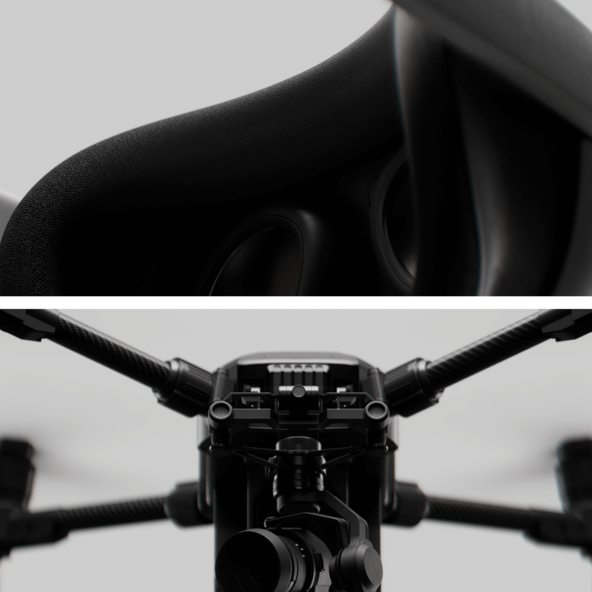
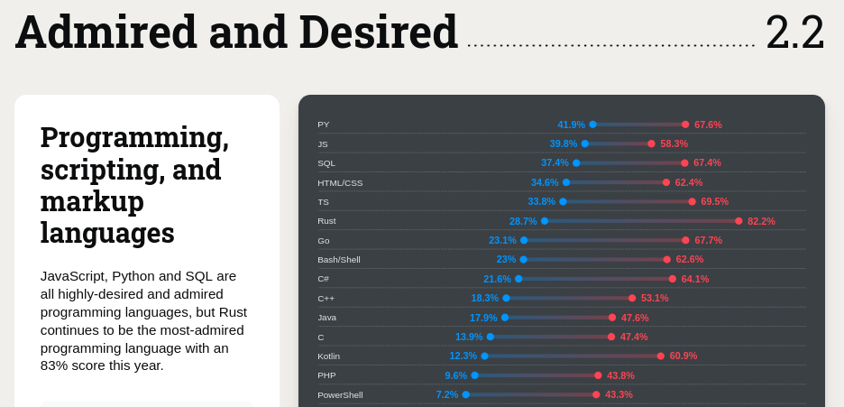
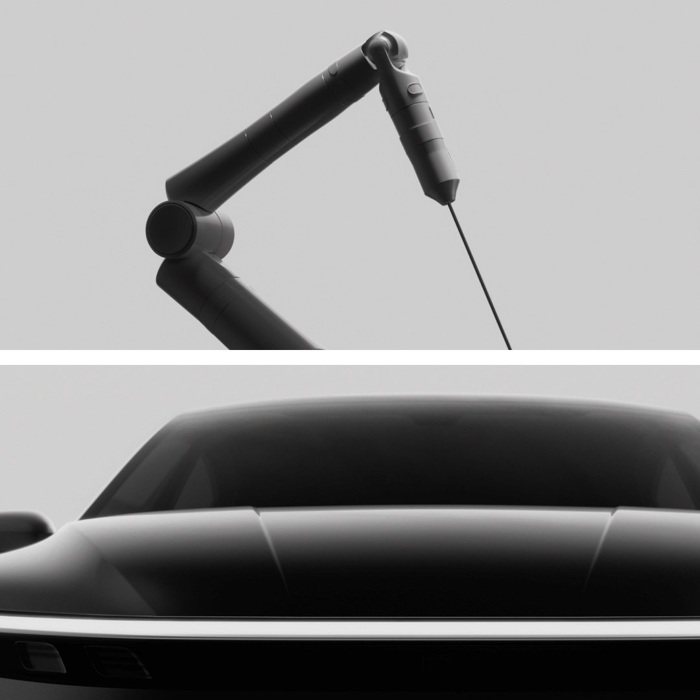

The future Qt language bridging technology
Cristián Maureira-Fredes
maureira.dev
@cmaureir


C++ is not the only
way to write Qt
What is the motivation?
- Developers arrive already fluent in another language
- Qt Quick is a great UI layer — the logic does not have to be C++
- Lowering the barrier grows the Qt and KDE contributor pool
- Language showcase: meet people where they already are
We have known this for a while
- Qt for Python is the official binding, maintained by The Qt Company and released on Qt's own cycle
- And it landed in KDE:
develop.kde.orgdocuments Python + QML + Kirigami as a supported way to build an app — bindings for KDE Frameworks, a full tutorial, Flatpak packaging - Nicolas Fella said it here last year: many KDE libraries already have Python and Rust bindings
None of what follows replaces this. Qt for Python gives you all of Qt.
And it is not alone
- wiki.qt.io/Language_Bindings lists 25+ projects across some fifteen languages
- Several are genuinely alive — QtJambi for Java/Kotlin, PyQt for Python
- Rust alone has six on that page: CXX-Qt, Rust-Qt, qmetaobject-rs, qtrs, qml-rust, qmlrs
- Six attempts at one language should tell us something. Most are one person, chasing an API that never stops moving.
So why would Qt add
another one?
It is not another one
Qt Bridges is explicitly not “yet another binding”.
- A binding mirrors Qt's C++ API into your language, class by class — and then has to keep mirroring it, forever
- A bridge turns the problem around: QML owns the UI, your language owns the logic, and only the boundary is crossed
- The docs say it plainly: it “does not aim to support every Qt use case”. That is the design, not a gap.
Why that changes the maintenance story
A binding
- Surface to maintain = the size of Qt
- Every new Qt class, enum and overload is more work owed
- Fall behind once and the gap only widens
- This is precisely how Qyoto, Kimono and most of that list of 25 died
A bridge
- Surface to maintain = the meta-object boundary: properties, slots, signals, models
- That boundary is small, and it has been stable for decades
- Qt grows; the bridge does not have to
- You get Qt Quick and Kirigami for free, because the UI was never translated in the first place
How a bridge works
- Keep your logic, data and models in your language; Qt Quick drives the UI
- Each bridge connects your types, properties and methods to QML using that language's own attributes or conventions
- You do not adopt a new idiom to get a UI — the Rust stays Rust, the C# stays C#
- No hand-written C++ glue, no
moc, no binding layer to keep alive
One front end, many back ends
- Qt's framing: build it once, use it everywhere — one QML front end, whichever language sits behind it
- Public beta today: Rust (Linux, macOS, Windows) and C# (Windows x64, Linux x86_64)
- Early access: Python, Swift, Java/Kotlin
- So the KDE question is not “Rust or C#”. It is whether a Kirigami UI can outlive the language underneath it.
But which languages?
Most used languages

Source TIOBE index, July 2025
Most admired languages

The numbers that matter here
Rust
- 82.2% admired — the most admired language, again
- Only 28.7% have used it — a large wants-to gap
- In the Linux kernel, Android and Windows
C#
- #5 on TIOBE at 4.87% — ahead of JavaScript
- 64.1% admired, 21.6% desired
- Huge desktop, enterprise and tooling install base
Sources: TIOBE July 2025; Stack Overflow Survey 2024
Qt Bridge for Rust
Why Rust?
- Performance
- Fast and memory efficient: no runtime, no GC
- Reliability
- Ownership model rules out data races and use-after-free at compile time
- Productivity
- One toolchain:
cargobuilds, tests, documents and publishes
- One toolchain:
fn main() {
println!("Hello, Qt!");
}
$ cargo run
Hello, Qt!
C++ and Rust, side by side
C++
class Person {
public:
Person(std::string n, int a)
: name(std::move(n)), age(a) {}
void talk() const {
std::cout << name
<< " says Hello!\n";
}
private:
std::string name;
int age;
};
int main() {
Person maria("Maria", 22);
maria.talk();
}
Rust
struct Person {
name: String,
age: i32,
}
impl Person {
fn talk(&self) {
println!("{} says Hello!",
self.name);
}
}
fn main() {
let maria = Person {
name: "Maria".into(),
age: 22,
};
maria.talk();
}
Getting the Rust bridge
- Rust & Cargo ≥ 1.88
- Qt 6.10 or newer, with
qmakeonPATH - A C++ toolchain
- Linux x86_64, Windows x64, macOS arm64 (experimental)
One crate, all of the public API:
# Cargo.toml
[dependencies]
qtbridge = "*"
On Ubuntu / Debian:
$ sudo apt install -y qt6-base-dev \
qt6-declarative-dev qt6-base-private-dev
$ cargo run
A button that says Hello, Qt!
main.rs
use qtbridge::{QApp, qobject};
#[derive(Default)]
pub struct Backend {}
#[qobject(Singleton)]
impl Backend {
#[qslot]
fn say_hello(&self) {
println!("Hello, Qt!")
}
}
fn main() {
QApp::new()
.register::<Backend>()
.load_qml(include_bytes!("Main.qml"))
.run();
}
Main.qml
import QtQuick
import QtQuick.Controls
import hello_world
ApplicationWindow {
visible: true
title: qsTr("Minimal QML app")
Button {
anchors.centerIn: parent
text: "Hello, Qt!"
onClicked: Backend.say_hello()
}
}
Attribute macros do the work: #[qobject],
#[qslot], #[qproperty], #[qsignal].
Demo
Placeholder — demo to be recorded
Why this matters for KDE
- Someone is already building it: a prototype sits on top
of
qtbridge-rust— kfbridge-prototypes - It mirrors the Qt Bridges layout:
kf-genis the codegen that buildskf-type-lib kf-typesis a parallel attempt at hand-rolled bindings- A branch is headed upstream on KDE Invent once it works
KDE Frameworks in Rust — status
Working
ki18nis up and running- Enough that
cxx-kde-frameworksis expected to move over to it
Blocked
kf-gen/kf-type-lib: no access to theqtbridgetypes yetkf-types: failing for a separate reason, still being worked on
The gap is upstream type exposure — exactly the kind of feedback a pre-release wants.
Where this fits in KDE
Natural fit
- The bridge is QML-only by design — which is exactly how Kirigami apps and Plasma applets are already built: QML UI, logic behind it
- KDE already documents a “Kirigami with Rust” path — the bridge is a new engine under a road that exists
- There is precedent: Angelfish ships Rust today in its ad blocker
- New apps and applets, not ports
tokioworks (see thehost_monitorexample) — monitors, indexers and backup tools can do real background work without stalling the UI- The
serde_jsonfeature hands JSON straight to QML
Not the tool for
- Qt Widgets apps — not supported; most of KDE's long-lived applications are Widgets
- Qt modules that only ship a C++ API
- Anything needing to mix Rust and C++ in one target — that is CXX-Qt's job today
Akademy has asked this before
- 2017 — Emma: Rust support in KDevelop
- 2020 — Méven: Rust in KDE
- 2023 — Tobias Hunger: A UI in Rust & Slint
- 2024 — Joshua Goins: C++, Rust and Qt: Easier than you think
- 2025 — Nicolas Fella: Language Bindings: The Future of KDE? — by then many KDE libraries already had Python and Rust bindings
- 2026 — and now Qt itself turns up with an answer
The Rust + Qt landscape
| CXX-Qt | Slint | Qt Bridge | |
|---|---|---|---|
| UI language | QML | own .slint DSL | QML |
| Renderer | Qt Quick | its own | Qt Quick |
| Kirigami / KDE Frameworks | yes | no | yes |
| Qt Widgets | yes | — | no |
| Drop into an existing Qt app | yes, that is the point | no | not yet |
| Build | CMake + Corrosion | cargo | cargo |
| Maintained by | KDAB, no CLA | Slint GmbH, CLA | The Qt Company, upstream |
So why not just CXX-Qt?
- You often should! They solve different problems
- CXX-Qt is for adding Rust into an app that already exists — Joshua's advice in 2024 was “start small and work your way up in existing applications”. For most of KDE, that is still the right advice.
- The Qt Bridge is for the app that does not exist yet, written by someone who does not want to touch CMake or C++ at all
- Different question, different tool: “make my C++ app safer” versus “let me build a KDE app without leaving Rust”
Boilerplate, honestly compared
CXX-Qt
#[cxx_qt::bridge]
pub mod qobject {
unsafe extern "RustQt" {
#[qobject]
#[qml_element]
#[qproperty(i32, number)]
type MyObject = super::MyObjectRust;
}
}
Plus CMake, plus Corrosion, to wire Cargo into the build.
Qt Bridge
#[derive(Default)]
pub struct MyObject {
number: i32,
}
#[qtbridge::qobject]
impl MyObject {
qproperty!("number", Member = number,
Notify = number_changed);
#[qsignal]
fn number_changed(&mut self);
}
Plus nothing. cargo run.
That difference is the product. It is also why CXX-Qt remains the more capable of the two.
And why not Slint?
- It is genuinely good, and built by people from this community — Slint's founders came out of KDE and Trolltech
- Its UI language is declarative, strongly typed and deliberately non-Turing-complete; it compiles ahead of time and scales down to microcontrollers
- But for KDE it means leaving the platform: no Kirigami, no KDE Frameworks, no Qt Quick Controls, none of our UI vocabulary
- And its CLA relicenses contributions — a real consideration for a community that has been careful about exactly this
The CXX-Qt convergence
- Both build on CXX — the same foundation underneath
- KDE's Rust work so far went through
cxx-kde-frameworks(CXX-Qt based); the prototype is moving to the bridge - Meanwhile
qtbridge-rustlists CXX-Qt interoperability as a stated future plan - So the two paths are converging — KDE does not have to pick a winner, but it does get to influence where they meet
Rust — in summary
- QML for the UI, safe Rust for the logic, no C++ written by hand
- One dependency (
qtbridge) and four attribute macros to learn - KDE Frameworks bindings are already in prototype
- Need C++ interop or Qt Widgets today? Use CXX-Qt instead
Qt Bridge for C#
Why C#?
- Reach
- #5 on TIOBE; desktop, web, cloud, tooling and games
- Managed and productive
- GC, LINQ,
async/await, properties, a vast standard library
- GC, LINQ,
- Familiar patterns
- MVVM and data binding developers already use in WPF
Console.WriteLine("Hello, Qt!");
$ dotnet run
Hello, Qt!
C++ and C#, side by side
C++
class Person {
public:
Person(std::string n, int a)
: name(std::move(n)), age(a) {}
void talk() const {
std::cout << name
<< " says Hello!\n";
}
private:
std::string name;
int age;
};
int main() {
Person maria("Maria", 22);
maria.talk();
}
C#
public class Person(string name, int age)
{
public string Name { get; } = name;
public int Age { get; } = age;
public void Talk() =>
Console.WriteLine($"{Name} says Hello!");
}
public class Program
{
static void Main()
{
var maria = new Person("Maria", 22);
maria.Talk();
}
}
Getting the C# bridge
- .NET SDK 8+
- CMake and Ninja on
PATH - A C++ toolchain
- A Qt 6 install (Linux points
QtDirat it; Windows can use the bundled runtime)
You never write the CMake or the C++ yourself.
From a template:
$ dotnet new install QtGroup.Qt.Bridge.CSharp.Templates
$ dotnet new qt -n MyQtApp && cd MyQtApp
$ dotnet build -p:QtDir=/path/to/qt-prefix
$ dotnet run
Or into an existing project:
$ dotnet add package \
QtGroup.Qt.Bridge.CSharp.linux-x64 \
--version 0.3.*-*
A button that says Hello, Qt!
Backend.cs / Program.cs
using Qt.Quick;
public class Backend
{
public void SayHello() =>
Console.WriteLine("Hello, Qt!");
}
internal class Program
{
static void Main(string[] args)
{
Qml.LoadFromRootModule("MainWindow");
Qml.WaitForExit();
}
}
MainWindow.qml
import QtQuick
import QtQuick.Controls
ApplicationWindow {
visible: true
title: "Minimal QML app"
Backend { id: backend }
Button {
anchors.centerIn: parent
text: "Hello, Qt!"
onClicked: backend.sayHello()
}
}
No attributes needed — public types are exposed by default,
PascalCase becoming camelCase in QML.
[Qt.Ignore] and [Qt.Include] fine-tune it.
Demo
Placeholder — demo to be recorded
Why this matters for KDE
- No current KDE C# effort — the last one,
QtSharp, has not moved since 2022 - It is the lowest-friction bridge: plain public classes are exposed automatically, so there is no macro or annotation vocabulary to learn first
- C# developers already know MVVM and data binding
—
INotifyPropertyChangeddrives a QML binding the same way it drives XAML - This is a recruiting play more than a porting one: the Windows desktop world is full of people who have never had a reason to try Qt
What a KDE C# effort would face
In its favour
- List-heavy KDE UIs map onto
ListModel<T>andTableModel<T>directly - Existing .NET code can be brought along; the bridge is added to a project, not built around
Against
- Windows and Linux x64 only — no macOS, no ARM
- The Linux workflow is the newer one and needs an external
Qt via
QtDir - A .NET runtime dependency is a real packaging question for distros
C# — in summary
- QML for the UI, ordinary C# for the logic — plain classes, no glue
dotnet new qtand you have a running app- Models via
ListModel<T>,TableModel<T>or anObservableCollection - Windows and Linux x64 today; 0.3 pre-release
KDE has been here before
The C# attempts
- Qyoto and Kimono — SMOKE-based bindings on Mono, covering Qt and KDE. Both discontinued.
- QtSharp — KDE's own wiki still calls it “in active development”… and was last touched in November 2022
Why they died
- Every one was a hand-maintained binding layer, downstream of Qt and volunteer-staffed
- Qt moved, the bindings did not, and the gap only ever widened
The difference now: the bridge is generated, and it is maintained upstream, by Qt, as part of Qt.
Before KDE bets on either
- Licensing. Both bridges are
LGPL-3.0-onlyor commercial. Fine for a KDE app under GPL-2.0-or-later, which can move to v3 — a blocker for anything GPL-2.0-only. Worth checking your app before you start. - Qt 6.10+ for the Rust bridge — ahead of what most distributions ship today, and ahead of KDE's own baseline
- Pre-release. Type names, macros and model base classes are all still expected to change
- A Rust gotcha: bridge objects live in
Rc<RefCell<_>>, so an interrupted call chain can panic on a borrow conflict rather than fail at compile time
What we would like from you
- Try a bridge on something small and real
- Tell us which Qt and KF types you reach for first
- Help unblock the KDE Frameworks prototype
- File the papercuts while the API can still move
The future Qt language bridging technology
Dr. Cristián Maureira-Fredes
@cmaureir
qt.io/qt-bridges
